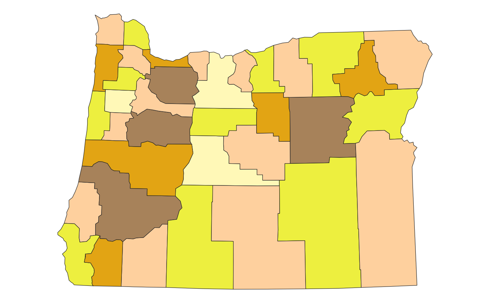
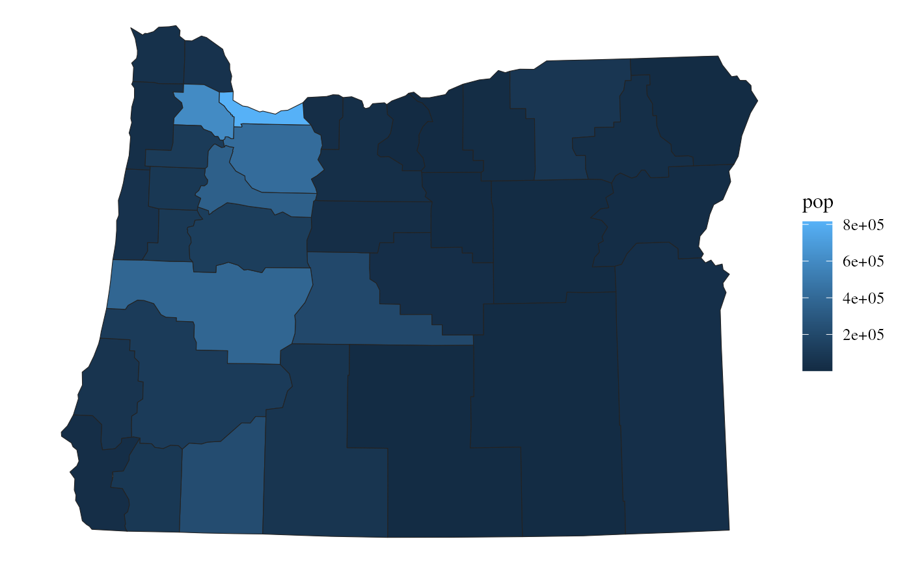
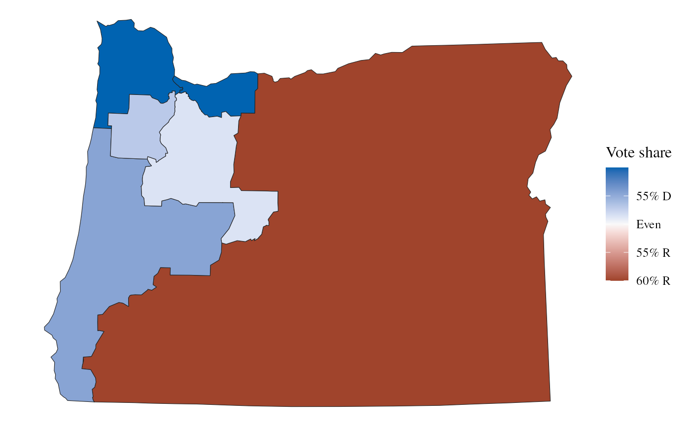
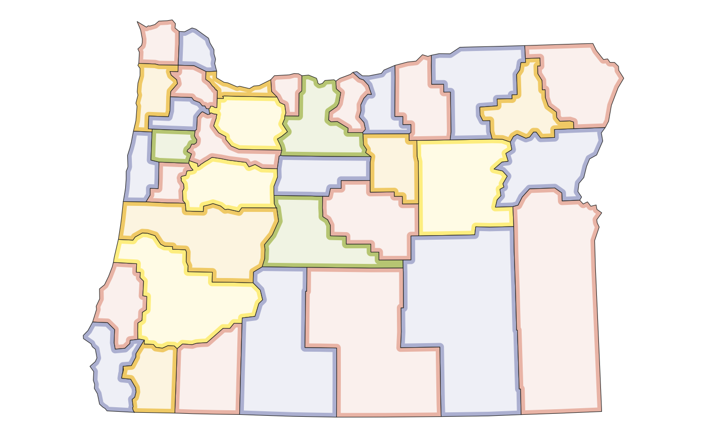

Aggregates shapefile according to the group aesthetic. If just group is
provided, then by default map regions will be colored by group so that
adjacent regions do not share a color (set fill to force a particular
color, or NA for no fill). If fill is provided, the values in fill
will be summed within the groups defined by group. If denom is provided,
the values in denom will be summed within the groups defined by group,
and then used to divide the summed values of fill. For example, fill and
denom can be used together to plot the partisan or demographic
characteristics congressional districts (see examples).
Usage
geom_district(
mapping = NULL,
data = NULL,
position = "identity",
na.rm = FALSE,
is_coverage = FALSE,
min_col = FALSE,
buffer = 0,
show.legend = NA,
inherit.aes = TRUE,
...
)
stat_district(
mapping = NULL,
data = NULL,
geom = GeomDistrict,
position = "identity",
na.rm = FALSE,
is_coverage = FALSE,
min_col = FALSE,
buffer = 0,
show.legend = NA,
inherit.aes = TRUE,
...
)Arguments
- mapping
Set of aesthetic mappings created by
aes()- data
The data to be displayed in this layer
- position
Position adjustment
- na.rm
if
TRUE, will silently remove missing values from calculations- is_coverage
As in
sf::st_union(). May speed up plotting for large shapefiles ifgeosis not installed or the shapefile is not projected.- min_col
If
TRUE, try to minimize the number of colors used. May be necessary for short palettes.- buffer
Optionally buffer the merged geometries. Negative values will shrink geometries towards the center and can be used for a "glowing boundary" effect (see examples).
- show.legend
Should this layer be included in the legends?
- inherit.aes
If
FALSE, overrides the default aesthetics, rather than combining with them.- ...
Passed onto the underlying geoms.
- geom
The geometric object to use display the data
Examples
library(ggplot2)
data(oregon)
ggplot(oregon, aes(group=county)) +
geom_district() +
scale_fill_penn82() +
theme_map()

ggplot(oregon, aes(group=county, fill=pop)) +
geom_district() +
theme_map()

ggplot(oregon, aes(group=cd_2020, fill=ndv, denom=ndv+nrv)) +
geom_district() +
scale_fill_party_c(limits=c(0.4, 0.6)) +
theme_map()

ggplot(oregon, aes(group=county)) +
geom_district() +
geom_district(buffer=-5000, fill="#ffffffcc", color=NA) +
scale_fill_natgeo() +
theme_map()
